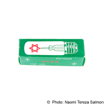
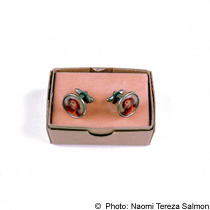
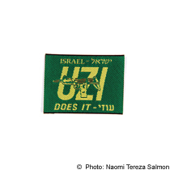
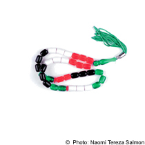
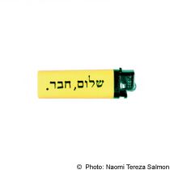
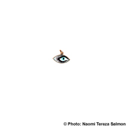

|


"Souvenirs from...", 1998. The Common Denominator They are bright. They are cheap. They are new. They are clichèes. Sometimes they are kitsch, Sometimes they are primitive. They are everywhere. They are found wherever tourists are to be found. They bear the names of places. They are normally small, so you can buy them quickly, without thinking about their weight. They can be made by hand. Sometimes they are of poor quality; sometimes they convey a political message. They are designed commercially, they are meant to catch the customer's eye. They are supposed to shine, and be objects of curiosity and beauty. They are finally placed on a desk, a shelf, a window sill, or in a car. They are prepared to be put up, hung up, attached to something, pocketed and set alight - or to set things alight. They are for writing, erasing, opening and plugging in. They are made to take in other things. They are conventional. They bear the landmark of a place, a town, a country. Some are functional, some are useful. They are instruments. They are propaganda. They are cherished. They are thrown out. They are taken from one place to another, sometimes quite a long distance. They are minicopies, memories of a trip, a stay somewhere, a moment. They come from a home, which they want to mirror, into a strange land: fragments of memory, chunks of yearning, signs of history, evidence of existence, knick-knacks.   Souvenir Series: 1. Black Box - Souvenir from Israel 2. Sehnsucht Heimat - Souvenir from Tirol 3. European Eyes on Japan - Souvenir from Tokyo 4. The Aftermath - Souvenir from Holocaust Memorials 5. MZG - Souvenir from the GDR 6. Zwiebeltown - Souvenir from Weimar 7. Bin There Done That - Souvenir from 9/11 8. D.O.M (Lighters) 9. Fundamental Bonbons   Close Window All content copyright 2006 Naomi Tereza Salmon - all rights reserved |